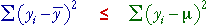

Components
The difference between a single sample value and the population mean can be written as the sum of two components,

Sums of squared components
Although it is not obvious without some algebraic manipulation, a similar result holds for the corresponding sums of squares,

The algebra to prove this result is not particularly difficult, but we leave it as an exercise for the mathematically inclined reader. Since the red component is the same for each of the n values in the data set, the equation can also be written as:
Note that, since the red component cannot be negative,

Displaying the components graphically
The left of the diagram below shows a jittered dot plot of a sample of n = 12 values from a normal distribution with mean µ = 10.
Click on crosses to see how the three components are related for individual values.
Finally, click Take sample a few times and observe that the sum of squares about the sample mean is always less than the sum of squares about the population mean.